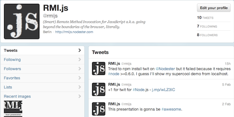
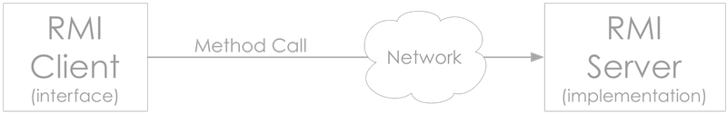
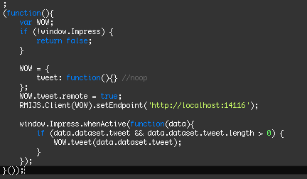
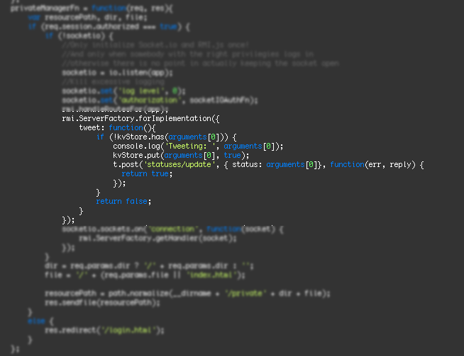

Your browser doesn't support the features required by impress.js, so you are presented with a simplified version of this presentation.
For the best experience please use the latest Chrome or Safari browser. Firefox 10 (to be released soon) will also handle it.
Beyond the boundaries of the browser.
Summary
- Demo first Quite unusual...
- What What is RMI.js?
- Why Advantages and possible use cases
- How Architecture & Implementation
- Chat Status, Next steps, Q&A...
Demo Demo first? Quite unusual...
Follow @rmijs on Twitter...

I'll show the code at the end of the presentation.
Think of Java Remote Method Invocation (RMI) in the Javascript world.
Java RMI was a good idea. Almost.
You can have a distributed system where clients can invoke methods that are implemented
somewhere else.
The bad part is the overly complex way in which this can be accomplished: stub, skeleton, interfaces
that have to extend java.rmi.Remote, naming lookup, policy files for permissions, etc. etc. etc.

The idea behind RMI.js
is to reuse the good concepts behind Java RMI and make remote invocations simple and efficient
by taking advantage of the flexibily and the peculiarities of Javascript.
Browser side Javascript +
Node.js +
Socket.io =
RMI.js
Because it makes your code Beautiful. And also more compact, semantic, less confusing and more maintainable.
Say we want to load a list of users from the backend:
$.ajax({
url: 'http://coolwebapp.com/rest/users',
success: function(data){
var list = $('ul.users');
$.each(data, function(user){
list.append($('<li>' + user.name + '</li>'));
});
}
});
vs
RESTService.getUsers()
.then(function(data){
var list = $('ul.users');
$.each(data, function(user){
list.append($('<li>' + user.name + '</li>'));
});
});
Oh, yeah, you get Promises too...
and one more
*important* thing...
by using Websockets (via Socket.io) we cut all the overhead of the HTTP protocol.
Less bytes over the wire and significant improvements in terms of latency.
RMI.js includes an additional supercool feature: Method Push
In the spirit of efficiency, the system can be set to push the implementation of a remote method
to the client when such method starts being invoked very often.*
*This is still at a very early stage and the implementation is poor, but it works.
How Architecture & Implementation
On the client side
The developer creates sort-of-a-stub:
var SortOfAStub = {};
SortOfAStub.myRemoteMethod = function(){}; //Just a placeholder...
SortOfAStub.myRemoteMethod.remote = true; //The method is remote
SortOfAStub.thisMethodIsNotRemoteInstead = function(){
console.log('foo')}; //This method is local instead
//local and remote can be mixed
};
And then the magic happens...
RMIJS.Client(SortOfAStub).setEndpoint('http://server.com');
Behind the scenes the empty remote methods are replaced
with a closure that when called triggers a remote invocation.
On the Node.js side
npm install rmi.js socket.io express
Environment setup + remote implementation:
var express = require('express'), app = express.createServer(),
io = require('socket.io'), rmi = require('rmi.js'),
socketio = io.listen(app);
rmi.handleRoutesFor(app); //So client-side and shared code are delivered
//to clients via express
rmi.ServerFactory.forImplementation({
myRemoteMethod: function(){ //Remote implementation
//Maybe do some stuff...
return 'bar'
}
});
socketio.sockets.on('connection', function(socket) {
//when a connection is received
//Socket.io passed it to RMI.js:
//an instance of RMIJS.Server is returned
var rmiServer = rmi.ServerFactory.getHandler(socket);
});
The code currently running in my browser...

...and what is running on the server.

Some Links
Home page: http://rmijs.nodester.com
Github: https://github.com/mmarcon/rmi.js
Twitter: @rmijs
Node.js: http://nodejs.org
Socket.io: http://socket.io
Chat Status, Next steps, Q&A...
Thank you.
Use a spacebar or arrow keys to navigate